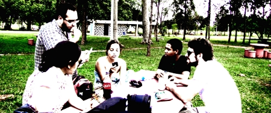

tecnologia
Encontro na Terra da Calangada / Peregrinação dos Des_Finados pelo Fim do Fim do Mundo.

Onde
Derivações da des_programação
Convidamos a continuar com a des_programação dos Des_finados e suas derivações no quintal da Cinistra para o dia 03/11/2012, dia dos sobreviventes:
Feira do URUBÚ - 03/11/2012 das 11:30 até às 19:00;
GambiarraDay - 03/11/2012 das 12:30 até às 18:00 - No Estacionamento 3 (Em frente ao Gibão)
- 2641 leituras
Encontros para Projetos e Atividades do MZBR - Sabado - 13.08.2011 - PARTICIPE
Encontros para Projetos e Atividades do MZBR - Sábado - 13.08.2011 - PARTICIPE
Sábado, 13.08.2011 - Diversos encontros estarão acontecendo pelo Brasil apresentando projetos e atividades sobre o Movimento Zeitgeist Brasil. Participe e exponha idéias você também.
(Pautas diferenciada dependendo da sua região)
- Apresentação dos novos membros
- Apresentação de novos projetos
- Sessão de Perguntas e Respostas
- Discussão aberta (sim, traga suas idéias e vamos falar a respeito)
- Organização dos grupos de trabalho (Time de Tecnologia, Time de Comunicação, Time Lingüístico,Time de Desenvolvimento e Time de Educação/Instrumentalização)
Seria interessante você assistir o Filme que formou o Movimento Zeitgeit e trouxe mais de meio milhão de pessoas juntas no mundo todo em menos de 3 anos. Pois HOJE, temos a capacidade de gerar energia, alimentação, moradia, saúde e educação PARA TODOS nesse planeta e ao mesmo tempo ELIMINAR as crises econômicas, sociais e ambientais junto com a corrupção, a pobreza, o abuso de poder, o desemprego, a desigualdade social, as guerras e outros fatores que impedem a vida e sustentabilidade do planeta e de seus habitantes.
- Assista "Zeitgeist Addendum" aqui: www.youtube.com/watch?v=oZcZ5InNxEg
Locais dos Encontros:
Encontro do Movimento Zeitgeist em Natal/RN - http://blog.movimentozeitgeist.com.br/2011/08/07/encontro-do-movimento-zeitgeist-em-natalrn-2/
Encontro do Movimento Zeitgeist em Belo Horizonte - http://blog.movimentozeitgeist.com.br/2011/08/05/encontro-do-movimento-zeitgeist-em-belo-horizonte-3/
Encontro do Movimento Zeitgeist em Porto Alegre - http://blog.movimentozeitgeist.com.br/2011/08/04/encontro-do-movimento-zeitgeist-em-porto-alegre-6/
Mais informações - http://movimentozeitgeist.com.br/
Contato: http://movimentozeitgeist.com.br/contato
J
Alex
- 1454 leituras
Participe dos encontros do Movimento Zeitgeist Brasil
Você gosta das idéias e oportunidades que a Metareciclagem trás a vida de cada um de nós?
Você gosta da idéia de usarmos a tecnologia que possuímos HOJE para auxiliar, da melhor forma possível, a humanidade?
HOJE, temos a capacidade de gerar energia, alimentação, moradia, saúde e educação PARA TODOS nesse planeta e ao mesmo tempo ELIMINAR as crises econômicas, sociais e ambientais junto com a corrupção, a pobreza, o abuso de poder, o desemprego, a desigualdade social, as guerras e outros fatores que impedem a vida e sustentabilidade do planeta e de seus habitantes. Gostaria de saber mais a respeito? Visite: www.mzbr.com.br - Assista "Zeitgeist Addendum" aqui: www.youtube.com/watch?v=oZcZ5InNxEg
Participe dos encontros que estão ocorrendo em todo o Brasil (em todo o mundo) para se informar sobre as propostas que o Movimento Zeitgeist apresenta no filme mencionado acima . Informações sobre os encontros podem ser obtidos no site www.mzbr.com.br
Vejo você lá!
:)
Alex
Localização
- 3083 leituras
Centro de Inovação Social dos Araçás
O Centro de Inovação Social dos Araçás é um ponto de encontro para pessoas interessadas na pesquisa e desenvolvimento de tecnologias sociais, metaparticipação, inovação pública, creative commons, copyleft e metareciclagem.
Projetos
- Tecnologia e Comunicação do Patrimônio Cultural
- Linux/BSD Installfest
- Mozilla Drumbeat
- Passeio fotográfico do patrimônio histórico
- Debates mensais sobre internet livre
- Oficinas de Wikificação
- Oficina de espelhamento da Wikileaks
- Oficinas de compartilhamento
- Oficinas de Wordpress
- Oficinas livres
- Grupos de estudos
Recursos
- Café livre
- wifi livre
- Cineclube
- Biblioteca
- Videoteca
- Hemeroteca
- Estacionamento
- Bicicletário (em breve)
Blog: http://inovacaosocial.cc
Localização
- 2847 leituras
É um exercício de tradução limitado pelo vocabulário
O trecho de texto abaixo começa com a intenção de um post do blog #reacesso e migra para um texto a ser construído na wiki metareciclagem. Se ele passar a ser um texto com mais de um colaborador entramos em uma outra fase.
.....
Tava aqui estudando um texto que fala de como a desconstrução não é uma crítica convencional do texto porque ali o "desconstrutor" não supõe "saber mais" que o construtor. E que o que essa prática explora de fato a capacidade que a linguagem tem de falar mais que os controles que temos dela. Daí, não sei porque, lembrei de um episódio em sala de aula no semestre passado, numa disciplina sobre redes, quando eu insatisfeito com as discussões que estavam me parecendo formalistas demais, coloquei que o problema com o discurso que estávamos ali tentando estabelecer era essa amarra do produzir "acadêmico" que nos faz ter que trazer vozes já legitimadas aqui ou acolá para falar por nós.
Lembro que o que eu pensava na hora era essa coisa de cada palavra, expressão, noção usada num texto, discurso acadêmico ter que trazer aliados "teóricos" para uma disputa. Conceitos, noções, perspectivas que estabelecem posições e colocam as possibilidades do jogo. As contrapartes, adversários no jogo, ou possuem também algum "domínio" das posições colocadas ou jogam com outras posições para objetivos aparentemente iguais. Apenas aparentemente, porque há objetivos implícitos, objetivos não manifestos, que de fato diferenciam os objetivos. Estas posições tem que ter legitimidade de acordo com as convenções dos grupos que estão no jogo. Um clube fechado onde as regras não são influenciadas por percepções externas.Só podemos usar conceitos e noções a, b ou c que vêm de X, Y e Z porque X, Y e Z já são reconhecidos pelo jogadores como posições legítimas. É aí que o formalismo enche o saco, limita e provavelmente produz esses espetáculos sem sentido que muitos veem nos trabalhos acadêmicos.
Que posições eu vejo na práxis que podem ser trazidas para o jogo ?
Então é que faz sentido ter as posições e sua limitações e trazer posições da práxis para ampliar as compreensões e chegar a ....
mas estamos limitados pelas possibilidades de tradução, os vocabulários não são suficientes para traduzir as experiências sem perder muito de sua riqueza
Aí nesse jogo, ainda estamos enfrentando questões morais e legais a serem dribladas
as experiências não são limitam às purificações que precisamos fazer delas para narrá-las no contexto acadêmico... aspectos morais, legais
por outro lado não há de fato essa fronteira no clube. O que é elimidado para purificar o texto se dá apenas no texto, por isso a compreensão do pesquisador sempre é mais ampla que o que há no seu texto,
O pesquisador, escritor, narrador dos fatos para a academia purifica as experiências para o texto mas lida com as impurezas na práxis e sabe que o texto, os textos são sempre muito limitados, pois por menos de impurezas que tenhamos eliminado o texto não é a experiência....
Depois de algumas contribuições na lista elaboro o que vem a seguir em 06 de junho de 2010
Nestas nossas "conversas" em lista, de uma forma mais direta e com um tempo e espaço de dispersão e esgotamento maiores, ou em posts de blogs e wikis e com outras caracterizações de tempo e espaço, ou mesmo nos mensageiros instantâneos, no IRC, cada um desses espaços e práticas sócio tecnológicas com suas possibilidades e limitações, sempre revivo a sensação que fez chegar à compreensão do #reacesso.
O reacesso, à primeira vista, com uma olhada superficial, pode parecer um simples ir e voltar de de textos e compreensões. Mas, por outro lado, ao mesmo tempo que leio a ordem do discurso, vou tendo cada vez mais reforçada uma noção de que, ainda que eu não sinta que consiga expressar plenamente, e que bom que não consiga, reacesso é real como aquela realidade que eu crio.
Criamos as realidades ao nomear certas coisas que carecem apenas de reacesso para receberem um outro nome e assim por diande. Mesmo quando não nomeamos explicitamente trabalharmos com a noção, a visão, a crença, um tipo de discurso ao qual não ligamos sempre conscientemente e diretamente a textos anteriores, e aqui eu uso texto compreendendo que pode significar muito mais do que algo que está escrito.
Recentemente fui apresentado à metáfora da tecnologia enquanto texto. Noção creditada ao Steve Woolgar e que a Christine Hine utilizou num livro de 2000, o Virtual Ethnography. A intenção nesse parágrafo era falar disto um pouco, já que achei a noção muito interessante e parece que ela tem um fundamento também para como estou visualizando a construção de um entendimento de tecnologia com a Actor-Network Theory. Mas quando eu retomo a escrita imediatamente algo me vêm à cabeça. Que o reacesso é, também, justamente uma reação à dificuldade de lidar com as referências.
É justamente esse processo que eu estou falando, de ter as pessoas conversando sobre um assunto mas sempre tendo que buscar referências como aliados para para que a conversa continue. Só que uma percepção imediada, agora, é que essas referências, ainda que me parecem quando penso em "objetivo" muito semelhantes, mas devem ter intencionalidades que eu não compreendo, não acesso, não vejo, não sinto e por aí vai.
Acho que a discussão vai na questão desses aliados-referências para o falar e como participar da conversa r sem esses aliados-referências. É possível? É possível que a sua fala seja considerada? E os aliados-referências não manifestos? Bem, claro que o pedacinho do Foucault que eu li deu uma turbinada aqui na capacidade de visualização da coisa. E, ao mesmo tempo, seŕa que eu posso dizer que tô entendendo quando o Liquuid diz que a lista é muito acadêmica, que somos muito acadêmicos?
Vou voltar pro resto do texto do Foucault, esse, como vários, eu não consigo deixar pela metade. O que reforça para mim aí que há uma série de problemas em torno dessa questão do reacesso, especialmente quando limito a questão à releitura do que em tese ainda não foi lido.
- 5645 leituras
JuntaDados
- 2377 leituras